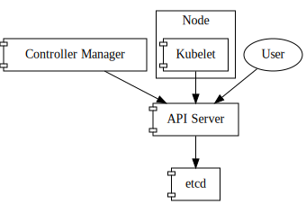
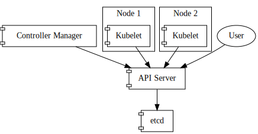
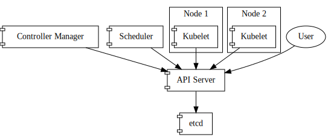
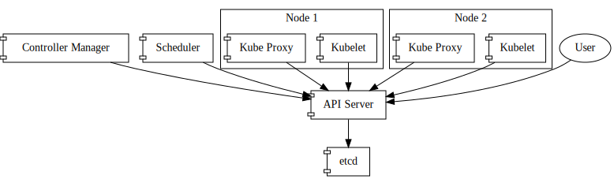

Welcome
Note: This book is a collaborative effort and it is expected to be in continuous evolution. It is open for contributions at any time. Make it better, make it yours.
Welcome to the Applications in a cloud native world book. This book will try to outline best practices when developing containerized and cloud native services.
In order to lay out the foundations we will focus on, we first need to consider how services have historically been managed.
Let's then jump straight to the Basics.
Basics
Services
A service as described by the Cambridge Dictionary, by taking one of its meanings:
service: a system or organization that provides something important that the public needs.
This meaning is also very accurate for the computing world. Moreover, a service will not necessarily only be consumed by people, but could also be consumed by other systems.
Servers
A server, as described by the Wikipedia:
A server is a computer program or a device that provides functionality for other programs or devices, called "clients".
It goes further, and also expand to reach a service definition:
Servers can provide various functionalities, often called "services", such as sharing data or resources among multiple clients, or performing computation for a client.
Processes
A process, as described by the Wikipedia:
A process is the instance of a computer program that is being executed by one or many threads. It contains the program code and its activity.
This definition is very tied to what we know about Operating Systems,
by referring to the thread term, but you get the idea.
Application
An application, again, as described by the Wikipedia:
Application software [...] is a program or group of programs designed for end users.
And system software:
System software is software designed to provide a platform for other software.
Common ground
As developers, we create programs; they can be either application software or system software. These programs serve a purpose, whether it is for end users directly, or for other systems to consume.
Application software usually is meant to be consumed directly by end users, and so, interaction with the system will be UX driven, no matter what kind of UX (e.g. terminal, graphical...)
System software, however, is going to be consumed by other software, and as such, this creates friction on both systems. We can ask ourselves some questions at this point:
-
How can both evolve and still make sure that they are complying with the contract they signed?
-
What happens to one service if the other is not responsive, and the former depends on the latter?
We will explore this and other complexities throughout this book.
Monolith
Enter the monolith. Let's have some fun by reading one of the Cambridge's dictionary definitions:
monolith: a large block of stone standing by itself that was put up by people in ancient times.
First things first: a monolith does not intrinsically signal a bad design. As we will learn throughout the book, a monolith could be a perfectly sane solution for many projects and teams. Moreover, it can even be the best solution given a certain set of constraints.
Let's get to a more focused definition of a monolithic application as defined by the Wikipedia:
a monolithic application describes a single-tiered software application in which the user interface and data access code are combined into a single program from a single platform.
However, when transposing this definition to client-side architectures, we could argue that the fact that the backend is a single-tiered application is in itself a monolith, even if the user interface is not strictly provided by the backend.
Traits
A monolithic application has a number of traits:
- Contains the whole or a big amount of business logic
- Accesses persistency services
- Databases
- Caches
- Assets
In general terms, a monolith could be internally structured in a number of modules, which encapsulates code and data that implement a particular functionality.
For the purpose of further analysis, let's assume that a monolith has all the business logic and data access logic combined in one. This doesn't mean that the monolithic application includes the persistency services, but that it merely consumes them.
Scalability
Vertical scaling
Vertical scaling refers to the strategy of increasing the resources to a given machine that is running one or more servers, in order to improve their scalability.
Vertical scaling has the limit of what the machine can cope with.
Horizontal scaling
In contrast, horizontal scaling means increasing the number of instances of a given server. This increase of instances can be done in different ways, e.g:
- Configuring a server to increase the number of threads
- The application needs to be thread safe
- Increasing the number of processes running a server
- Might improve throughput under certain conditions, but limits of the machine running this server apply
- Creating more instances of this server on different machines
When we refer to horizontal scaling we are usually referring to the strategy of creating more instances of this server on different machines.
Horizontal scaling of traditional monolithic applications have a number of challenges:
- Deployment of a new instance of the server
- Manage the lifecycle of a number of instances of the server in
different machines
- Monitoring
- Operational
- Rollouts
- Application rollout rollbacks
- Monitoring
- Impact on shared services, since they have now several consumers
- Databases
- Key value stores
- Instance specific knowledge
- Disk caches
- Assets
Some of the challenges previously outlined might or might not apply, depending on the design of the application.
Boundaries
Boundaries in monolithic applications have been extensively discussed in many texts. In general, we can observe a vertical alignment in these systems:
|
|
|
|

Usually, one can observe a modular approach in order to achieve the implementation detail isolation, where every module will only export interfaces, meant to be consumed by other modules of the same system. This is what the contract would be in this case.
A monolithic application can be broken down in different modules, that can reside inside of the same binary, or in shared libraries. A monolithic application can also consume third party shared libraries by being linked against them. This conforms a pattern on boundary separation and code reusability.
API and ABI stability in this context is what matters the most for other modules that are consuming a certain module from third party libraries. There are many examples of this, but some would be the Qt Framework, Glib or Gtk.
Deployment
Once that we have created an application we want it to be consumed by end users or other systems. We will explore what have been the deployment options throughout time, both in terms of infrastructure, and in the techniques used to perform those deployments.
Infrastructure
Our application needs to be running somewhere, so end users and other systems can consume it. Infrastructure is this somewhere.
Let's go through the different options that we have to deploy our application.
Metal
Deploying on the metal is the strategy of deploying an application directly on top of the operating system that is running on a given physical machine.
Assuming we have a physical server with an operating system running, performing the deployment on this environment means running a number of steps in order for the operating system to spawn a new process that runs our server.
Virtualization
A virtualized environment abstracts the concept of a physical machine, running on top of a physical (or virtual) machine.
According to the Wikipedia, virtualization is described as:
virtualization: refers to the act of creating a virtual (rather than actual) version of something, including virtual computer hardware platforms, storage devices, and computer network resources.
When it comes to the deployment of applications, the strategy followed for metal deployments can also apply on virtualized environments, but other kind of deployments arised as well: start a machine from a given template (or snapshot), including the application, or a mixed approach in which certain components and pre-requisites come with the template or snapshot, and some automation is used to deploy the desired version of the application.
Since booting virtual machines is to all effects booting a machine with a fully fledged operating system the startup time is still in the orders of metal deployments.
Or, virtualized infrastructure can also virtualize other machines, where we can run our application onto. This is referred as nested virtualization:
Containerization
Containerization or OS-level virtualization, according to the Wikipedia:
OS-level virtualization refers to an operating system paradigm in which the kernel allows the existence of multiple isolated user space instances.
And it continues:
Such instances [...] may look like real computers from the point of view of programs running in them. A computer program running on an ordinary operating system can see all resources (connected devices, files and folders, network shares, CPU power, quantifiable hardware capabilities) of that computer. However, programs running inside of a container can only see the container's contents and devices assigned to the container.
In general, this is where Docker (formerly dotCloud) found a developer focused niche. The UX Docker introduced allowed developers to:
- Define container images in a reproducible and in a very easy way
- Distribute these container images in a so-called registry
- Let developers run containers, based on container images:
- Previously distributed to a shared registry
- Locally built
As a result of this, it was much easier to reduce the friction and the dependency between the application and the system it was running on, because as with happens with virtual machine images, the container image includes all operating system components, except for the kernel.
Still, the friction was not completely removed. Many containerized applications expect environment variables, or certain volume mounting to be set up, else they won't work as expected.
In any case, containerization and specially the UX dotCloud introduced helped to make reproducible builds and environments easier with a greatly reduced friction surface.
Our containers can also run on top of virtualized machines:
Techniques
Deployment techniques vary, but in general we can categorize them in manual or automated.
A manual deployment is triggered by a human, at any moment in time, whereas an automated deployment is triggered by a CI/CD component, such as Jenkins, or Gitlab.
Manual
A deployment could mean "upload through FTP" the new version of the website. It could also mean, "perform a git pull" on the production server, or some other similar way of deploying a new version of our application.
Needless to say this was tricky, for several reasons:
- How does the system behave when in the middle of a deployment?
- Can a request fail because it hit a codepath when the latest version of the application wasn't fully deployed?
- If a certain logical change requires a database migration, or
persistency migration
- How is it performed?
- Is it safe to re run this migration, if run by mistake?
- Does it require service downtime until the migration is done?
- How to check whether the newly deployed version of the application
is performing normally?
- What will signal us if the deployment is failing?
- Will we notice before all our users notice?
- If proven problematic, how to rollback the deployment?
- If database migration, or persistency migration was required, how to rollback this as well?
- How fast can we react upon these events, without committing more mistakes along the way?
Tools like Capistrano have emerged in order to perform a set of commands on different machines.
Automated
The automated deployment strategy leverages the so called Continuous Integration and Continuous Delivery methodologies.
This strategy might involve a tool like Jenkins to run all the required tests to ensure that a new version of the application passes all required tests, and then, deploy it to the given infrastructure in a semi-manual (requiring manual confirmation) or completely automatic fashion.
Targets
A deployment target can be understood as a machine, or a set of machines where the application is going to be deployed.
Ultimately, this machine needs to have some component listening for incoming requests. Generally, a web server is exposed, that will in turn talk to our application internally, e.g. using a UNIX socket.
However, it's also common to see Application servers (like Zend) or even Servlet containers (like Tomcat), that allow you to deploy your application on a fully fledged web server.
Service Oriented Architecture
According to Wikipedia, Service Oriented Architecture, or SOA definition is:
Service-oriented architecture (SOA) is a style of software design where services are provided to the other components by application components, through a communication protocol over a network.
And so, the core of a SOA is the loose coupling of the different services that conform a given system. According to the SOA manifesto, we can point some traits of Service Oriented Architectures:
- Business value over technical strategy
- Strategic goals over project-specific benefits
- Intrinsic interoperability over custom integration
- Shared services over specific-purpose implementations
- Flexibility over optimization
- Evolutionary refinement over pursuit of initial perfection
This is a different approach as opposed to internally splitting our application in modules to define boundaries. With a SOA, we will have a set of services that can talk to each other over the network, and so their API will be some form of HTTP or RPC API.
Microservice
Let's write what microservices means according to the Wikipedia, once again:
Microservices are a software development technique [...] that arranges an application as a collection of loosely coupled services. In a microservices architecture, services are fine-grained and the protocols are lightweight.
Let's take a step back and introduce the notion of component, on Martin Fowler's words:
Our definition is that a component is a unit of software that is independently replaceable and upgradeable.
And he continues:
Microservice architectures will use libraries, but their primary way of componentizing their own software is by breaking down into services. We define libraries as components that are linked into a program and called using in-memory function calls, while services are out-of-process components who communicate with a mechanism such as a web service request, or remote procedure call.
One main reason for using services as components (rather than libraries) is that services are independently deployable.
[...]
Traits
While there is no "official" definition of a microservice, we can settle upon certain characteristics, based on what was described in the previous section:
- It has its own lifecycle
- Consumed over a well defined API
- It can be independently scaled as required
- Simple enough to be easily understood
- Has its isolated and own persistence, if any; it will never access other microservice persistence
- Communicates with other services using their exposed API's in order to cross boundaries
As a result of this, and given that every component (service) in the system exposes its functionality through a well defined (and hopefully documented) API, then, every microservice:
- Can be implemented in the most appropriate language and framework for the work
- Can have its own internal rules; e.g. one core microservice might be formally verified in isolation
- Can evolve at its own pace, as long as the exposed API's honor the contract that its consumers expect
Scalability
Vertical scaling
Vertical scaling doesn't have any meaningul differences from the description provided in the Monolith section.
Horizontal scaling
Horizontally scaling microservices should be an easy operation to perform, potentially automated by an external orchestrator, such as Kubernetes.
One of the driving principles for microservices apart from loosely coupled services is to be able to adapt and react to change faster, horizontally scaling a given service in a fast way is crucial for our microservice architecture to be flexible so it can properly absorb traffic spikes.
Boundaries
Boundaries in microservices, as Martin Fowler describes, are organized around business capabilities:
The microservice approach to division is different, splitting up into services organized around business capability.
Such services take a broad-stack implementation of software for that business area, including user-interface, persistant storage, and any external collaborations. Consequently the teams are cross-functional, including the full range of skills required for the development: user-experience, database, and project management.
|
|
|
|

Given a small set of microservices, everyone on the team managing those microservices is closer to the whole functionality a service provides, and become a cross functional team; because they are able to understand the whole service from end to end.
And ultimately, how both look, when put side by side:
|
|
|
|

On the previous diagram is clear how in general terms, a monolith uses a single database, whereas a set of microservices use their own storage, reponsibility of different teams, and how a microservice can at any moment in time be formed by one or more instances, depending on the load, and on the decisions taken by the administrators and/or the orchestrator.
Deployment
Deployment strategies for microservices can be similar to deploying monoliths, described in a previous section.
However, when managing a constellation of microservices things get trickier, and this is where an orchestrator comes handy.
In some instances, companies have used their own tooling to deploy and orchestrate microservice deployment, even without containers.
It has also been typical to see using containers, but in a raw way,
with some Infrastucture as Code (IAC) or Configuration as Code
(CAC) tooling like Ansible, Chef or Puppet handling the docker
CLI directly for managing the microservices lifecycle.
Whatever floats your boat, there is no silver bullet here, but replicating this tooling again and again for different applications is costly and error-prone. Orchestrators can greatly help in making this user experience uniform across different environments and infrastructure; also, and as we'll discover later they can greatly respond to external change, trying to ensure that our constraints are always met, when possible.
This was the spirit in which Kubernetes was conceived, and this is why for the remaining on this book we will deploy our microservices on top of an orchestrator. Kubernetes in our case.
Cloud Native
Cloud Native Computing Foundation (CNCF) Technical Oversight Commitee (TOC)'s Cloud Native definition is:
Cloud native technologies empower organizations to build and run scalable applications in modern, dynamic environments such as public, private, and hybrid clouds. Containers, service meshes, microservices, immutable infrastructure, and declarative APIs exemplify this approach.
These techniques enable loosely coupled systems that are resilient, manageable, and observable. Combined with robust automation, they allow engineers to make high-impact changes frequently and predictably with minimal toil.
[...]
Let's remind what traits are inherited from microservices:
- It has its own lifecycle
- Consumed over a well defined API
- It can be independently scaled as required
- Simple enough to be easily understood
- Has its isolated and own persistence, if any; it will never access other microservice persistence
- Communicates with other services using their exposed API's in order to cross boundaries
and, some of the consequences:
- Can be implemented in the most appropriate language and framework for the work
- Can have its own internal rules; e.g. one core microservice might be formally verified in isolation
- Can evolve at its own pace, as long as the exposed API's honor the contract that its consumers expect
So, aside from this traits inherited from the fact that a Cloud Native application is implemented as a microservice, what are the unique traits of Cloud Native applications that not all microservices meet? Let's go through some:
- Container packaged
- While this might seem an implementation detail, a Cloud Native application comes in the form of a container with all required dependencies for that specific microservice to work correctly.
- Dynamically managed
- Cloud Native applications lifecycle are managed by some external orchestrator that is able to schedule, scale, monitor and control the execution of the Cloud Native application.
- Failure resiliency
- Cloud Native applications are built with failure in mind; every service that they access to can fail at any time, and it should not result in permanent failure.
- Metrics
- Cloud Native applications expose metrics, so an external orchestrator is able to take decisions based on load, like scaling the service in an automated way.
- Health checks
- Liveness probes
- Cloud Native applications expose health check endpoints, so an external orchestrator is able to restart the service if it's not running as expected.
- Readiness or startup probes
- Cloud Native applications expose readiness check endpoints, so an external orchestrator is able to know when to route requests to a recently started instance, only when it's ready to process them.
- Liveness probes
- Logging
- Cloud Native applications usually log into
stdoutandstderrstreams. Usually, all logs from all applications will be aggregated into a unified logging layer. This allows us to improve the observability upon a set of microservices at any given time.
- Cloud Native applications usually log into
- Tracing
- Cloud Native applications might include tracing instrumentation. The concept of spans allows us to understand what happened across a distributed set of services that spawned a tree of requests from the initial request.
- Scalable
- Cloud Native applications can be scaled in and scaled out as required, based on current and expected demand.
- Ephemeral
- A Cloud Native application instance has present that is ephemeral, and so, it can be instantiated at any time, or destroyed at any time by an external orchestrator.
Service communication
When writing a new service, or when consuming other services, there are some questions that require an answer:
- Is this service meant to be consumed by external parties?
- How will this service be consumed?
- How do requests get authenticated?
- How do requests get authorized?
- What is the Service Level Agreement (SLA) of this service?
- Even if internal, SLA might apply across services and teams
There are different types of services in a Service Oriented Architecture: internal and external.
Internal services
Internal services implement a certain business capability, or a part of it. They are meant to be consumed by other services within the system.
External services
External services are meant to be consumed by end users. An example of these services, are for example public API's used by third parties to integrate some functionality from our product into their platform.
Service intra communication
Internal services can communicate with one another. External services can communicate with internal services, but internal services should not communicate with external services of the same system.
Any of them can communicate with external systems if desired.
Protocols
A service can be exposed in a number of ways in order to be consumed. Let's name a few ways:
| Protocol | Best suited for | Description |
|---|---|---|
| HTTP | External | An HTTP API that exposes endpoints for interacting with the service |
| GraphQL | External | Query language that allows for fine grained retrieval of data |
| Remote Procedure Calls | Internal | RPC's are a lightweight way of exposing service endpoints |
HTTP
An HTTP API could be RESTful or not. It exposes a number of API
endpoints that can be consumed with HTTP verbs, usually: GET, HEAD,
POST, PUT, PATCH and others.
Data on HTTP requests, whether sent or received by a client require some kind of type negotiation, in which the client encodes the request using some kind of serializing (e.g. XML, JSON...), and annotates the request to be sent to the server; along with an expected type in which the results should come back.
Different HTTP API's will behave different, and each implementation might have specialties that require attention: e.g. rate limits reported on response headers, sessions, or token based authentication (like JWT).
GraphQL
GraphQL is usually served over HTTP, however, its approach is slightly different to a resource-based service. GraphQL exposes a single endpoint where it's possible to query and mutate resources.
GraphQL contains a representation of all the objects it's able to manage, and thus, it exposes this single endpoint, where clients can cherry-pick what exact parts of the resources they want back from the server.
Remote Procedure Calls
Remote Procedure Calls (RPC's) are not a new idea. SOAP or XML-RPC are hardly something new.
However, Remote Procedure Calls in a Cloud Native world are usually referred by frameworks like gRPC, or Cap'n Proto.
gRPC is typically used along with protocol buffers as the serializing/deserializing layer.
They allow us to perform very lightweight calls on other services, and use HTTP/2 under the covers, so they rely on long lived connections and on request/response multiplexing. This behavior requires awareness, because load balancing requests is not as trivial as it is with HTTP/1.1 requests, and usually require some client-side explicit balancing.
In gRPC, a definition is written for a given service, along with the procedures and types that are exposed and can be consumed, and it is able to create a stub of both the server and client for any of the supported languages.
Traffic
There are different kinds of traffic that we'll refer to later on throughout this book.
Inbound (or ingress)
Inbound traffic is the traffic that comes from outside to the cluster, towards a service running inside it. This is typically an end-user, or an external system accessing our external API's.
Internal
Internal traffic is traffic that is generated inside the cluster, and whose destination is another service within the cluster. This is typically a service to service request.
Outbound (or egress)
Outbound traffic is traffic originated inside the cluster, whose destination is somewhere outside the cluster, can be some service of our infrastructure running outside of the cluster, or a third party API that we are integrated with.
Kubernetes
Based on the official Kubernetes website definition:
Kubernetes (K8s) is an open-source system for automating deployment, scaling, and management of containerized applications.
However, I don't think this description honors what Kubernetes really does best: reconcile resources.
Funnily enough, the fact that Kubernetes is able to deploy and manage conterinerized applications is primarily because of how the reconciliation of resources happen.
Application and environment
Usually, when we had to deploy an application we had constant friction between the application developers and the operations teams -- the ones that will ultimately be putting the application into production and maintain its day-to-day operation.
Let's take a step back and see what each step on this story brought us.
Containerization
By being able to easily create a "snapshot" of our application and all its dependencies, we were able to greatly reduce the friction between our application and the system it's running on. As developers, we now have much greater control on the environment our application is running on.
Of course, this does not mean that we are the sole responsibles of this, but now we have more certainty of what is the environment our application runs on.
Still, something is missing: how our application is exposed to the world. There is still a gap here: we provide the snapshot of our application, but how it's exposed and operated is not up to us.
Infrastructure as config
Kubernetes is usually referred to as Infrastructure as code, but in this sense I prefer to call it Infrastructure as config. Now, with Kubernetes, we have the ability to track the way our application is deployed and managed:
- What versions of every component of our applications are bundled together?
- Application secrets
- Configuration
- Storage used by the application
- How the application is exposed
- Security
- What can this application know about the platform?
- What permissions have this application when running, at the node level?
In general, we can see that while containerizing made our snapshot of our application broader, Kubernetes also includes how this application is operated in its snapshot. We now have a complete, reproducible way of deploying an exact version of our application, including how it is operated.
Concepts
This information is detailed in the Kubernetes' official documentation.
Kubernetes Objects
Basic abstractions
Pod
Service
Volume
Namespace
Higher level abstractions
Deployment
DaemonSet
StatefulSet
ReplicaSet
Job
Components
The API Server
Let's start with a very simple overview, and build on top of that:

As users, we will use some kind of client to contact the API Server, allowing us to list, get, create, modify or delete resources.
These resources are stored by the API Server in some kind of Key Value Store. The ubiquitous Key Value Store used for Kubernetes is etcd. However, and as we'll discover later, any other backend implementing the etcd gRPC interface would work as well (this is the idea behind Kine, for example).
Now, we are able to create and manipulate resources. The API Server will be the piece that will perform Authentication, Authorization, and similar features for us, and will eventually store those resources into etcd. However, we are missing the reconciliation part yet.
The Controller Manager
For this, there is a component in Kubernetes called the Controller Manager. The Controller Manager has a number of controllers that can be opted-in, or opted-out. For the sake of simplicity, let's assume that we use the default ones.
The Controller Manager is just another client, in that it connects to the API Server in order to watch and manipulate resources.
Let's draw it.

Let's describe what the Controller Manager is, based on the official documentation:
[...] is a daemon that embeds the core control loops shipped with Kubernetes. In applications of robotics and automation, a control loop is a non-terminating loop that regulates the state of the system. In Kubernetes, a controller is a control loop that watches the shared state of the cluster through the apiserver and makes changes attempting to move the current state towards the desired state.
Now, what is the Controller Manager reconciling exactly? We are going to get a bit ahead of time here, but stay with me. Let me describe two Kubernetes concepts, in the easiest possible way:
- Pod: is a group of one or more containers.
- ReplicaSet: set of replica Pods. Guarantees the availability of a specified number of identical Pods.
A ReplicaSet allows us to configure a Pod template inside it, along with a number of replicas that we want running of that Pod.
As such, we as clients can directly create Pods, or we can create ReplicaSets.
ReplicaSets will be reconciled by the ReplicaSetController (one of the controllers bundled with the Controller Manager), and it will in turn create as many Pods as required based on the number of desired replicas.
Important: by creating a ReplicaSet, the ReplicaSetController in the Controller Manager reconciles the current state (no Pods exist for this Replica Set), to a new state (desired number of Pods exist for this Replica Set), by creating the Pods itself against the API Server. However, ReplicaSets and Pods are just resources sitting on our Key Value Store; nothing is running yet.
The Kubelet
The Kubelet is the Kubernetes node agent. It runs on every machine that is part of our cluster, and is another API Server client.
Let's draw it.

Provided we have two nodes in our infrastructure capable of running workloads, the diagram would look like this:

The Kubelet will then be yet another client of the API Server, watching for Pods that are assigned to it, and again, reconcile the current status (what pods are running right now on this machine?), with the desired status (what pods should be running right now on this machine?).
It will use a Container Runtime (such as Docker, cri-o or containerd), in order to manage the containers defined in Pods (creating, or deleting them).
Now, if we created a Replica Set, that resulted in Pods being created by the ReplicaSetController, how do these Pods get scheduled on any of the nodes, so the Kubelet on that node can then reconcile and create the real workloads?
The Scheduler
As you can imagine, its job is to schedule workloads. Let's get more into detail: the Scheduler is watching the API Server for Pods that are unscheduled, and will assign a node for each Pod, based on specific decision algorithms, also taking into account specific user-provided preferences for those workloads.
Let's draw it.

And so, again, the Scheduler is just another API Server client.
The Proxy
The Kubernetes Proxy (or kube-proxy) is yet another Kubernetes component running on all nodes of the cluster. Its main duty is to install networking rules on the host, so pods can reach internal service IP addresses.
Let's draw it.

The Kubernetes Proxy usually runs in a containerized fashion, but that is not relevant for the purpose of this diagrams. Let's draw it with two nodes again:

Some CNI providers have enabled the ability to not depend on the Kubernetes Proxy, such as cilium.
Service Scaling
Manual scaling
Vertical Pod Autoscaler
Horizontal Pod Autoscaler
Cluster autoscaler
Extensibility
Webhooks
Controllers
Custom Resource Definitions
Operators
API Server aggregation
Continuous integration
Continuous integration, as defined by ThoughtWorks:
Continuous Integration (CI) is a development practice that requires developers to integrate code into a shared repository several times a day. Each check-in is then verified by an automated build, allowing teams to detect problems early.
By integrating regularly, you can detect errors quickly, and locate them more easily.
The idea behind continuous integration is to have better certainties when it comes to deploying an evolution of an application.
By having this constant feedback with small code iterations, we can be more certain if:
-
A proposed change to the codebase is breaking a certain existing functionality.
-
A proposed change to the codebase is not fullfilling a certain new functionality.
-
A proposed change to the codebase is not including bug regressions.
-
A combination of changes to the codebase is breaking existing or new functionality, when both in isolation looked fine.
-
A third party change in our dependencies is breaking existing functionality.
In general, it's a safety net before we deploy our application, so we can have a higher level of certainty that based on the different tests we provided, all of them are reporting success. Of course, there is always a huge negative space -- functionalities and regressions not covered by our tests, but anyhow we are in a much better position than if our negative space was the whole space.
Testing
Testing is a fundamental piece of Continuous Integration, let's dive into what kind of tests we can encounter.
Unit tests
Unit tests allow us to test very close to the logic of the application. These tests primary goal is to ensure that the implementation of our functions and methods work as expected, and they usually test corner and regular cases.
These tests should be very fast to execute, and they should be executed very often.
If we are following Test Driven Development (TDD), best practices recommend:
- Write a unit test
- Run all tests; confirm the test failure
- Implement the code
- Run all tests; confirm the test success
- Refactor the code
- Repeat
Integration tests
Integration tests are at a higher level than unit tests. On Martin Fowler's words:
Integration tests determine if independently developed units of software work correctly when they are connected to each other.
Martin advocates for two different level of Integration tests, that we'll discuss in the following sections: Narrow integration tests and Broad integration tests.
Narrow integration tests
Narrow integration tests, as described by Martin Fowler:
-
Exercise only that portion of the code in my service that talks to a separate service
-
Uses test doubles of those services, either in process or remote
-
Thus consist of many narrowly scoped tests, often no larger in scope than a unit test (and usually run with the same test framework that's used for unit tests)
By the nature of using test doubles, these tests should be in the orders of unit tests to set up.
Broad integration tests
Broad integration tests, as described by Martin Fowler:
-
Require live versions of all services, requiring substantial test environment and network access
-
Exercise code paths through all services, not just code responsible for interactions
While Broad integration tests are still focused on the integration between two components, they require a fair amount of work to set up, and is at a higher level of complexity than Narrow integration tests in terms of setup, because they require that components really talk to each other, with the real versions of those services.
Besides that, the scope is bigger than with Narrow integration tests, because Broad integration tests do not focus on the parts of the code that interacts with other services, but more complete code paths.
Functional tests
Functional tests are a step further than Narrow integration tests and Broad integration tests.
Functional tests require real services to be set up, as happens with Broad integration tests, but their focus is on the business requirements of the application, unlike Broad integration tests, that are focused on the correct implementation of several code paths involving several services.
End to end tests
End to end tests main focus is to replicate the user behavior given a complete system running of our application.
They usually focus on user stories to ensure that functionalities expected by our customers or users work as expected, and they cannot get into any details of the system internally: they only can interact with the system as a user would do.
Acceptance tests
The main goal of acceptance tests is to ensure that a given system, with all its components and services running meet whatever constraints were set. It's a contract.
These tests usually focus on business requirements but their goal is to determine if an evolution of our application still honors the contract, and so it can be accepted.
These tests might include very different checks, but to name a few:
-
A certain user flow is met as desired.
-
The system meets given performance thresholds on the whole system or on certain subsytems.
-
The system meets certain security requirements.
These are some examples, but anything from a high perspective can be added to this contract.
Performance tests
Performance tests ensure from a technical point of view that certain services, components or flows in our system have not been degraded by recent evolutions of the software.
In case that the performance was degraded by a recent change in our system, they can be used to pin point the change or set of changes that incurred in this penalty.
Smoke tests
Build artifacts
Build artifacts are the result of running a pipeline in our Continuous Integration system.
We can register as many build artifacts as desired, so we can watch them along with our results in our CI system.
However, when talking about container based microservices, it's very common to build a container image at the beginning of the pipeline, and use this artifact to perform a certain set of tests.
Pushing container images to a container registry does not mean anything about delivery though, aside from the fact that those new container images are sitting on our container image registry.
Container image registry
Once that all our tests have passed, our Continuous integration pipeline can push a new version of our container image to our registry. Ideally, these container images should have a univocally determined tag that can help us understand what exact version of the container image is running on all our services.
For example, it's not a good practice to once all our tests have
passed, push a container image with a latest tag to our registry and
use it on our deployment manifests. We will have poor control over
what exact version of the container image is running at a given time.
We can leverage a hosted third party container image repository, such as the Docker Hub, or quay.io -- along with many others, however, for greater control, it's better if we own our container image registry (or even several instances, for example for different environments or groups within our organization).
Several options exist for in-premises container image registry:
Ideally, you can even deploy these registries inside your Kubernetes clusters.
Continuous Delivery
Continuous Delivery as described in continuousdelivery.com:
Continuous Delivery is the ability to get changes of all typesincluding new features, configuration changes, bug fixes and experimentsinto production, or into the hands of users, safely and quickly in a sustainable way.
Our goal is to make deploymentswhether of a large-scale distributed system, a complex production environment, an embedded system, or an apppredictable, routine affairs that can be performed on demand.
We achieve all this by ensuring our code is always in a deployable state, even in the face of teams of thousands of developers making changes on a daily basis. We thus completely eliminate the integration, testing and hardening phases that traditionally followed dev complete, as well as code freezes.
As you can imagine, it is very tied to Continuous Integration, and a good Continuous Integration implementation greatly empowers Continuous Delivery.
The idea that we can deliver new iterations of software at a very good pace and frequently improves the confidence on the system.
Continuous Delivery is not strictly tied to automated deliveries, but it can be implemented as such, where no human is required to press any button in order to deploy a new iteration of our system.
CI driven
As we have discussed previously, we have now two levels of composition when deploying our application:
-
A set of container images, representing all our services, that ultimately together comprise our application.
-
The configuration needed to deploy them inside a Kubernetes cluster.
Both are very tied, and while we are now in a much better position, being able to replicate all our services along with the configuration, there is still room for failure.
Our development cycle could involve several steps, let's imagine the following:
- Build and push a new version of a given service, as a container image into our container image registry -- for this to happen, all our tests should have passed.
This leaves the open question: who or what updates the deployment manifests and all the configuration that goes along with it? When is this done?
We could argue that all changes, both to the service and the deployment manifests are done together, and so if they passed, it should be safe to redeploy with the deployment manifests that were merged.
However, it's not as simple as it looks.
Again, there is friction when it comes to certain deployment objects:
-
Secrets that should only be in production, never sitting on a developers machine.
-
Persistent volumes that access datastores that are only used in production, and that the Continuous Integration should never have access to.
-
Access to third party services that require production secrets and that we don't want near our Continuous Integration pipeline, not even pointing to the production endpoints.
And so, we can see that there is still room for differences between what our CI pipeline has tested, and what will actually run in production. Again, room for failure.
Also, when we are submitting a change to our application, provided that deployment manifests are alongside it, what tag should we place in the manifest, so our latest version of the service is deployed in the test pipeline? This can be overcomed with CI specific logic, but is worth noting.
Continuous Integration systems are not meant to deploy and observe the application after it has been deployed, this is why we need something else to perform Continuous Delivery in a safer way.
It is a great tool to perform all kinds of tests on the evolution of our application, and push some artifacts that can later be used to perform the real delivery of our application.
GitOps
As we have seen, our Continous Integration pipelines are not the best place to perform a rollout of our application.
GitOps is a term coined by WeaveWorks, so let's see what is their definition:
GitOps is a way to do Kubernetes cluster management and application delivery. It works by using Git as a single source of truth for declarative infrastructure and applications. With Git at the center of your delivery pipelines, developers can make pull requests to accelerate and simplify application deployments and operations tasks to Kubernetes.
Let's list the principles they name:
- The entire system described declaratively
- The canonical desired system state versioned in Git
- Approved changes can be automatically applied to the system
- Software agents to ensure correctness and alert on divergence
While we are very used to 1-3, 4 is something that sounds new. Let's see that one more in detail:
Once the state of your system is declared and kept under version control, software agents can inform you whenever reality doesnt match your expectations. The use of agents also ensures that your entire system is self-healing. And by self-healing, we dont just mean when nodes or pods failthose are handled by Kubernetesbut in a broader sense, like in the case of human error. In this case, software agents act as the feedback and control loop for your operations.
Now, this is what feels different as a Continuous Delivery procedure. Let's replicate the workflow they claim:
- A pull request for a new feature is pushed to GitHub for review.
- The code is reviewed and approved by a colleague. After the code is revised, and re-approved it is merged to Git.
- The Git merge triggers the CI and build pipeline, runs a series of tests and then eventually builds a new image and deposits to the new image to a registry.
- The Weave Cloud Deployment Automator watches the image registry, notices the image, pulls the new image from the registry and updates its YAML in the config repo.
- The Weave Cloud Deployment Synchronizer (installed to the cluster), detects that the cluster is out of date. It pulls the changed manifests from the config repo and deploys the new feature to production.
And an obligatory diagram:
|
|
|
|

And how a GitOps pipeline would look like:
|
|
|
|

It's very clear now that we have now a set of explicit components driving the rollout phase. It is the responsibility of this component to ensure that the deployment is driven to success, and alert otherwise.
Solutions like Argo CD allow for an implementation of Continuous Delivery pipelines as well.
Observability
Moving to microservices have some advantages under certain circumstances. Different teams within an organization are free to build and run them, owning them from beginning to end.
Observing a monolith and ensuring that it's working as expected is relatively easy -- as opposed to a constellation of microservices. With a monolith we have greater control of what is happening at any given time on the whole system, while losing development agility; with microservices now the challenge is how to understand the whole picture, and how a service can affect others when it's not behaving as expected.
However, while the microservices themselves have a lower complexity code-wise when looked at them independently, the challenge is now to observe the whole system, and that all components are working as expected, being able to detect anomalies as fast as possible. We have many moving targets.
Observability usually refers to the combination of the following practices:
-
Monitoring: we need to monitor all microservices, ensuring that they are running as expected with the resources that they are supposed to use. A bad deployed service could be restarting under certain code paths, monitoring allows us to better understand when is this happening.
-
Logging: since we have now a number of microservices, each one logging on its own, we need to perform logging aggregation, what allows us to send all logs from all services to a central logging service, that helps us isolate logs from different services at a given time window.
-
Tracing: now a request on a service can end up spawning a complex tree of requests between different services. By tracing these requests we can better understand what requests led to anothers, and what was the relationship between them.
-
Metrics: a microservice can expose metrics, so an external orchestrator is able to know if it needs to scale in or out a given microservice based on the demand.
Also, we have to monitor both the infrastructure (the Kubernetes cluster healthiness), as well as our applications running on top of it.
Monitoring
Monitoring applies both to the infrastructure and the applications running on top of it.
Usually, we can leverage the same tools to monitor both levels.
Prometheus and Grafana are the ubiquitous solutions to provide this desired level of monitoring.
Prometheus is a time-series database used to store all the monitoring information for all our cluster components. It ships with a powerful query language to retrieve information.
Grafana is the dashboard that leverages the Prometheus query language in order to show it in a graphical and more understandable way. It is highly configurable, so you can organize dashboards at will.
At the infrastructure level, we can find the Node problem detector, that runs in form of a DaemonSet, reporting to the Node object in the API Server node conditions and events.
Logging
Tracing
Metrics
Resource metrics
The resource metrics pipeline allows components like the Horizontal
Pod Autoscaler to take decisions on a small set of metrics; these
metrics are collected by an in-memory
metrics-server. The
Kubelets are the ones providing the information on pod resource
usage, and uses cAdvisor to
collect this information.